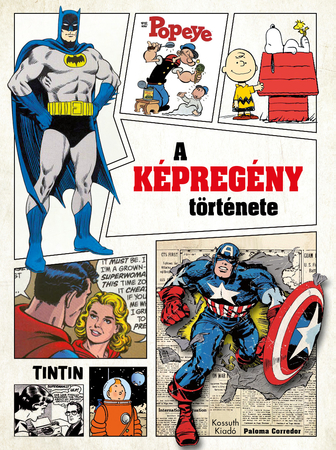

A Képregény története

A képregény története több mint száz évre nyúlik vissza, amikor az első nyomtatott képregények megjelentek az Egyesült Államokban az 1900-as évek elején. Az első népszerű képregények a fürdőruhás hősöket ábrázolták, akik különböző kalandokba keveredtek. Az 1930-as években jelentek meg a nagyon népszerű, ma már kultikussá vált képregények, mint például a Superman és a Batman. Az 1950-es években a képregényekben megjelent a tudományos-fantasztikus és horror műfaj is. Az 1960-as évektől a képregényekben számos olyan téma jelent meg, amelyek a társadalmi és politikai problémákat boncolgatták, és ezzel a képregények társadalmi hatást is gyakoroltak. Ma a képregények széles körben elterjedtek, és sokféle műfajban és stílusban készülnek, így mindenki megtalálhatja a neki tetsző képregényt.